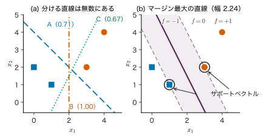
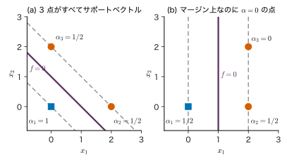
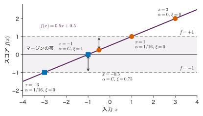
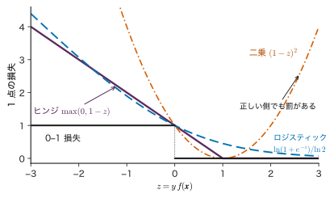
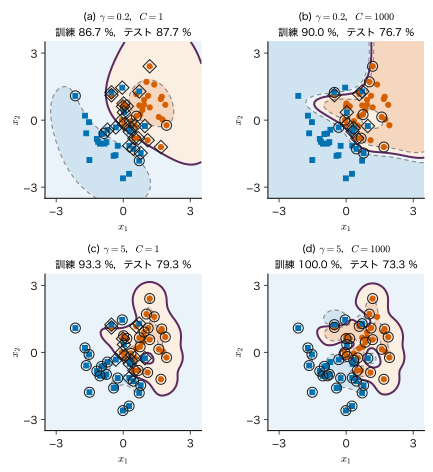
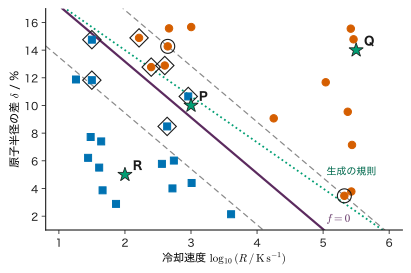

第11章サポートベクトルマシン — マージンを最大にする
- 2 つのクラスを誤りなく分ける直線は無数に引ける．その中からどれを選べば，まだ見ていない試料にもよく当たるか．
- 境界の位置を決めているのは，どのデータか．境界から遠い試料を取り除いたら，境界は変わるか．
- 直線で分けられないとき，また，ラベルに誤りや重なりがあるとき，同じ考え方をどう広げるか．
ガラスになった試料と結晶化した試料を，2 つの記述子の平面に打ってみたとする．2 つの群の間には隙間があり，そこに引ける分離線はいくらでもある．ある線は一方の群のすれすれを通り，別の線は隙間の真ん中を通る．測定のばらつきで点が少し動いたとき，すれすれの線は誤りやすく，真ん中の線は誤りにくい．この「隙間の真ん中」を，最も近い点までの距離（マージン）を最大にする問題として定式化したものがサポートベクトルマシン（support vector machine，SVM）である．
SVM の解には著しい性質がある．境界を決めるのは，境界のすぐそばにある少数の点（サポートベクトル）だけで，遠くの点は取り除いても答えが変わらない．これは第7章 7.7 節の KKT 条件（相補性条件）からそのまま出てくる．さらに，最適化問題を双対問題に書き直すと，データは内積の形でしか現れず，第10章のカーネルに置き換えることで曲がった境界が得られる．本章では，マージン最大化（11.1）から，主問題と双対問題（11.2），サポートベクトル（11.3），手計算（11.4），重なりを許すソフトマージン（11.5），カーネル SVM（11.6），スコアと確率の違い（11.7），解法（11.8）へ進み，材料データでの使い方（11.9）と注意点（11.10）で締めくくる．
- 点から超平面までの符号付き距離を導き，マージンが $1/\norm{\bm{w}}$ になる理由（スケールの固定）を説明できる．
- ハードマージン SVM の主問題から Lagrange 関数を作り，双対問題を 1 行ずつ導ける．主問題と双対問題の変数の違いを言える．
- 相補性条件から，予測にサポートベクトルだけが残ることを示し，$b$ を求められる．
- 2 点・3 点・1 次元の小さな問題で $\bm{\alpha}$，$\bm{w}$，$b$，マージンを手で計算し，KKT 条件で答えを確かめられる．
- ソフトマージンの双対問題 $0\le\alpha_n\le C$ を導き，点を 3 種類に分類し，ヒンジ損失との等価性を説明できる．
- RBF カーネルの $\gamma=1/(2\ell^{2})$ と $C$ が境界の形と過学習に与える影響を説明し，交差検証で選べる．
- SVM のスコア $f(\bm{x})$ が確率ではないことを説明できる．
入門ルートで読む節：この章は詳しいルートの章である．入門ルートでは 11.11（まとめ）だけを読めばよい（入門ルートの次の章は第13章である）．
記号：この章だけラベルを $y_n\in\{-1,+1\}$ とする
本書の他の章では二値の分類のラベルを $y\in\{0,1\}$ と書くが，この章だけは $y_n\in\{-1,+1\}$ とする（$+1$ と $-1$ が 2 つのクラス）．こうすると「点 $n$ が境界の正しい側にある」ことを $y_nf(\bm{x}_n)\gt0$ の一つの式で書ける．第9章のロジスティック回帰の $y=1$ が本章の $y=+1$ に，$y=0$ が $y=-1$ に対応する．双対変数（制約の乗数）は第7章と同じく $\alpha_n$ と書く（第22章では $\alpha_t(j)$ を forward 変数という別の意味に使う）．Lagrange 関数は第7章と同じく $\Lambda$ と書く．
11.1 マージン最大化 — 隙間の真ん中を通る境界詳しいルート
11.1.1 何をしたいのか
図11.1(a) の 4 点は，橙の丸（$y=+1$）と青の四角（$y=-1$）に分かれている．A，B，C の 3 本の直線はどれも 4 点を正しく分ける．訓練データの正解率はどれも 100 % で，正解率だけでは選べない．そこで「最も近い点までの距離」を比べる．括弧の中の数がその距離であり，B は 1.00，A は 0.71，C は 0.67 である．測定誤差で点が 0.8 だけ動けば，A と C では分類が変わりうるが，B では変わらない．最も近い点までの距離を最大にする直線（図11.1(b)）を選べば，点のわずかな揺らぎに対して最も頑健な境界が得られる．これが SVM の出発点である．

11.1.2 定義と記号
データは $\data=\{(\bm{x}_n,y_n)\}_{n=1}^{N}$，入力 $\bm{x}_n\in\R^{D}$，ラベル $y_n\in\{-1,+1\}$ とする．入力を基底関数（特徴写像）$\bm{\phi}:\R^{D}\to\R^{M}$ で写し，$\bm{\phi}_n\equiv\bm{\phi}(\bm{x}_n)\in\R^{M}$ と書く．11.5 節までは $\bm{\phi}(\bm{x})=\bm{x}$（$M=D$）と思って読んでよい．
定義11.1 線形の判別関数と決定境界
重み $\bm{w}\in\R^{M}$ とバイアス $b\in\R$ をもつ
\begin{equation} f(\bm{x})=\bm{w}^{\tp}\bm{\phi}(\bm{x})+b \label{eq:11-model} \end{equation}を判別関数とし，$f(\bm{x})\gt0$ なら $+1$，$f(\bm{x})\lt0$ なら $-1$ と予測する．$f(\bm{x})=0$ となる点の集合（特徴空間の超平面）を決定境界という．$f(\bm{x})$ の値そのものを本章ではスコアと呼ぶ．スコアは確率ではない（11.7 節）．
11.1.3 点から超平面までの符号付き距離
第9章 9.1 節と同じ導出を，本章の記号で短く再掲する．特徴空間の点 $\bm{\phi}$ を，超平面 $\bm{w}^{\tp}\bm{\phi}+b=0$ 上の最も近い点 $\bm{\phi}_{\perp}$ と，そこからの変位に分ける．$\bm{w}$ は超平面に垂直なので（超平面上の 2 点 $\bm{u},\bm{v}$ では $\bm{w}^{\tp}(\bm{u}-\bm{v})=(-b)-(-b)=0$），変位は $\bm{w}$ の向きを向き，
$$ \bm{\phi}=\bm{\phi}_{\perp}+r\,\frac{\bm{w}}{\norm{\bm{w}}} $$と書ける．$r$ は符号付きの距離（$\bm{w}$ の向きの側で正）である．両辺に左から $\bm{w}^{\tp}$ を掛けて $b$ を足すと
$$ \bm{w}^{\tp}\bm{\phi}+b=\underbrace{\bm{w}^{\tp}\bm{\phi}_{\perp}+b}_{=0}+r\,\frac{\bm{w}^{\tp}\bm{w}}{\norm{\bm{w}}}=r\norm{\bm{w}} . $$したがって $r=f(\bm{x})/\norm{\bm{w}}$．点 $n$ が正しい側にあれば $f(\bm{x}_n)$ と $y_n$ の符号が同じなので，正しい側への距離は
\begin{equation} \begin{aligned} r_n&=\frac{y_n\,f(\bm{x}_n)}{\norm{\bm{w}}}\\ &=\frac{y_n\bigl(\bm{w}^{\tp}\bm{\phi}_n+b\bigr)}{\norm{\bm{w}}} \end{aligned} \label{eq:11-dist} \end{equation}である（誤った側にあると負になる）．
11.1.4 スケールを固定すると，マージンは $1/\norm{\bm{w}}$
データが線形分離できる（全点を正しく分ける $(\bm{w},b)$ がある）とする．マージンを，最も近い点までの距離 $\min_n r_n$ と定義する．マージン最大化は
$$ \max_{\bm{w},b}\ \min_{n}\ \frac{y_n\bigl(\bm{w}^{\tp}\bm{\phi}_n+b\bigr)}{\norm{\bm{w}}} $$である．この形のままでは扱いにくい．ここで鍵になるのは，$(\bm{w},b)$ を正の定数 $c$ 倍して $(c\bm{w},cb)$ にしても，境界 $f=0$ の位置も $r_n$ も変わらないことである（分子も分母も $c$ 倍になる）．つまり $(\bm{w},b)$ には 1 つ自由な倍率が残っている．そこで倍率を
\begin{equation} \min_{n}\ y_n\bigl(\bm{w}^{\tp}\bm{\phi}_n+b\bigr)=1 \label{eq:11-canon} \end{equation}となるように選ぶ（正準形）．最も近い点ではスコアが $\pm1$ になり，他の点では $y_nf(\bm{x}_n)\ge1$ である．このときマージンは $\min_n r_n=1/\norm{\bm{w}}$ になり，$f=+1$ と $f=-1$ の 2 枚の超平面の間隔（両側のマージンの幅）は $2/\norm{\bm{w}}$ である．$1/\norm{\bm{w}}$ の最大化は $\norm{\bm{w}}$ の最小化と同じで，さらに微分しやすい $\tfrac12\norm{\bm{w}}^{2}$ の最小化と同じである．
式 \eqref{eq:11-primal} をハードマージン SVM の主問題という．「全点で $y_nf\ge1$」を守ったまま $\norm{\bm{w}}$ を最小にすると，必ずどこかの点で等号が成り立ち（成り立たなければ $\bm{w}$ と $b$ をさらに縮められる），式 \eqref{eq:11-canon} が自動的に満たされる．目的関数は $\bm{w}$ の凸二次関数，制約は $(\bm{w},b)$ の一次式なので，これは凸二次計画問題であり，局所最小は大域最小である（第7章 7.4 節）．
例題11.1 3 本の直線のマージンとマージン最大の直線
図11.1の 4 点 $\bm{x}_1=(3,2)$，$\bm{x}_2=(4,4)$（$y=+1$），$\bm{x}_3=(1,1)$，$\bm{x}_4=(0,2)$（$y=-1$）について，(1) 直線 A：$x_1+x_2-4=0$ と B：$x_1-2=0$ のマージンを求めよ．(2) B を正準形に直せ．(3) マージン最大の直線を求めよ．
解答 (1) A は $\bm{w}=(1,1)^{\tp}$，$b=-4$，$\norm{\bm{w}}=\sqrt2$．$y_nf(\bm{x}_n)$ は順に $1,\ 4,\ 2,\ 2$ なので，式 \eqref{eq:11-dist} の $r_n$ は $1/\sqrt2,\ 4/\sqrt2,\ 2/\sqrt2,\ 2/\sqrt2$．最小は $1/\sqrt2\approx0.71$．B は $\bm{w}=(1,0)^{\tp}$，$b=-2$，$\norm{\bm{w}}=1$．$y_nf$ は $1,\ 2,\ 1,\ 2$ でマージンは $1.00$．B のほうが広い．
(2) B では $\min_ny_nf=1$ がすでに成り立つので，$(\bm{w},b)=((1,0)^{\tp},-2)$ がそのまま正準形である．A も最小値が 1（点 $\bm{x}_1$）なので正準形だが，$\bm{x}_3$，$\bm{x}_4$ の側は $y_nf=2$ で余裕が片寄っている．
(3) 異なるクラスの点の組で最も近いのは $\bm{x}_1=(3,2)$ と $\bm{x}_3=(1,1)$（距離 $\sqrt{2^{2}+1^{2}}=\sqrt5$）である．この 2 点だけがマージン上にあると仮定すると，境界はこの線分の垂直二等分線になる．$\bm{w}$ は $\bm{x}_1-\bm{x}_3=(2,1)^{\tp}$ に平行なので $\bm{w}=c(2,1)^{\tp}$．正準形の条件 $f(\bm{x}_1)=+1$，$f(\bm{x}_3)=-1$ は
辺々引いて $5c=2$，$c=0.4$，$b=1-3.2=-2.2$．よって $\bm{w}=(0.8,\ 0.4)^{\tp}$，$b=-2.2$．残りの点は $y_2f(\bm{x}_2)=0.8\cdot4+0.4\cdot4-2.2=2.6\ge1$，$y_4f(\bm{x}_4)=-(0+0.8-2.2)=1.4\ge1$ で制約を満たす．マージンは $1/\norm{\bm{w}}=1/\sqrt{0.8}=\sqrt5/2\approx1.118$（$\bm{x}_1$ と $\bm{x}_3$ の距離のちょうど半分），幅は $\sqrt5\approx2.24$ である．これが本当に最大であることは，11.3 節の KKT 条件で確かめられる（演習11.1 と同じ手順）．
11.2 ハードマージンの主問題と双対問題詳しいルート
11.2.1 Lagrange 関数
式 \eqref{eq:11-primal} を第7章 7.7 節の標準形「$g_n\le0$ のもとで最小化」に合わせると，制約は $g_n(\bm{w},b)=1-y_n(\bm{w}^{\tp}\bm{\phi}_n+b)\le0$ である．制約 1 本につき乗数 $\alpha_n\ge0$ を 1 つ用意し，$\bm{\alpha}=(\alpha_1,\dots,\alpha_N)^{\tp}\in\R^{N}$ とまとめる．Lagrange 関数は
\begin{equation} \begin{aligned} &\Lambda(\bm{w},b,\bm{\alpha})=\frac12\norm{\bm{w}}^{2}\\ &-\sum_{n}\alpha_n\bigl\{y_n(\bm{w}^{\tp}\bm{\phi}_n+b)-1\bigr\} \end{aligned} \label{eq:11-lag} \end{equation}である（$+\sum_n\alpha_ng_n$ を書き直しただけ）．
11.2.2 停留条件
$\Lambda$ を $\bm{w}$ と $b$ について最小にする．$\bm{w}$ の成分 $w_j$ で偏微分すると，$\tfrac12\norm{\bm{w}}^{2}=\tfrac12\sum_jw_j^{2}$ から $w_j$，和の項から $-\sum_n\alpha_ny_n\phi_j(\bm{x}_n)$ が出る．ベクトルでまとめて
$$ \begin{gathered} \nabla_{\bm{w}}\Lambda=\bm{w}-\sum_{n=1}^{N}\alpha_ny_n\bm{\phi}_n=\bm{0},\\ \pdiff{\Lambda}{b}=-\sum_{n=1}^{N}\alpha_ny_n=0 . \end{gathered} $$したがって
\begin{align} \bm{w}&=\sum_{n=1}^{N}\alpha_ny_n\bm{\phi}_n , \label{eq:11-stat-w}\\ 0&=\sum_{n=1}^{N}\alpha_ny_n . \label{eq:11-stat-b} \end{align}式 \eqref{eq:11-stat-w} は「最適な重みは訓練点の特徴ベクトルの重み付きの和である」と言っている．第10章 10.2 節の双対表現 $\bm{w}=\bm{\Phi}^{\tp}\bm{a}$ と同じ形で，係数が $a_n=\alpha_ny_n$ にあたる．ただし対応するのは形だけである．第10章（カーネル Ridge 回帰）と第12章（ガウス過程）の双対の係数ベクトル $\bm{a}$（太字）は連立方程式の解（たとえば $\bm{a}=(\bm{K}+\lambda\bm{I})^{-1}\bm{y}$）で，符号に制約がない．本章の $\alpha_n$ は不等式制約の乗数で，$\alpha_n\ge0$ であり，多くの点で 0 になる．両者は別の量である．
11.2.3 双対問題を導く
導出：ハードマージン SVM の双対問題
式 \eqref{eq:11-lag} を項ごとに展開する．
$$ \begin{aligned} \Lambda={}&\frac12\bm{w}^{\tp}\bm{w}-\bm{w}^{\tp}\sum_{n}\alpha_ny_n\bm{\phi}_n\\ &-b\sum_{n}\alpha_ny_n+\sum_{n}\alpha_n . \end{aligned} $$第 2 項に式 \eqref{eq:11-stat-w} を使うと $\bm{w}^{\tp}\bm{w}$，第 3 項は式 \eqref{eq:11-stat-b} より 0 である．よって
$$ \begin{aligned} \Lambda&=\frac12\bm{w}^{\tp}\bm{w}-\bm{w}^{\tp}\bm{w}+\sum_{n}\alpha_n\\ &=\sum_{n}\alpha_n-\frac12\bm{w}^{\tp}\bm{w} . \end{aligned} $$残った $\bm{w}^{\tp}\bm{w}$ にもう一度式 \eqref{eq:11-stat-w} を入れる．和の添字を $n$ と $m$ に分けて
$$ \begin{aligned} \bm{w}^{\tp}\bm{w}&=\Bigl(\sum_{n}\alpha_ny_n\bm{\phi}_n\Bigr)^{\tp}\Bigl(\sum_{m}\alpha_my_m\bm{\phi}_m\Bigr)\\ &=\sum_{n=1}^{N}\sum_{m=1}^{N}\alpha_n\alpha_my_ny_m\,\bm{\phi}_n^{\tp}\bm{\phi}_m . \end{aligned} $$$\bm{\phi}_n^{\tp}\bm{\phi}_m=k(\bm{x}_n,\bm{x}_m)$（カーネル，第10章 10.3 節）と書けば，双対関数 $q(\bm{\alpha})=\min_{\bm{w},b}\Lambda$ は次の $D(\bm{\alpha})$ になる（$K_{nm}\equiv k(\bm{x}_n,\bm{x}_m)$ と略記する）．
ただし，式 \eqref{eq:11-stat-b} を満たさない $\bm{\alpha}$ では，$\Lambda$ は $b$ の一次関数 $-b\sum_n\alpha_ny_n+(\text{$b$ によらない項})$ なので，$b\to\pm\infty$ で下限がなく $q(\bm{\alpha})=-\infty$ である．このような $\bm{\alpha}$ は双対問題の最大化では選ばれないので，$\sum_n\alpha_ny_n=0$ を双対問題の制約として残す．
（導出終わり）
行列で書くと，Gram 行列 $\bm{K}\in\R^{N\times N}$（$K_{nm}=k(\bm{x}_n,\bm{x}_m)$）と $Q_{nm}=y_ny_mK_{nm}$ を成分とする $\bm{Q}\in\R^{N\times N}$ を使って $D(\bm{\alpha})=\bm{1}^{\tp}\bm{\alpha}-\tfrac12\bm{\alpha}^{\tp}\bm{Q}\bm{\alpha}$ である．$\bm{Q}=\diag(\bm{y})\,\bm{K}\,\diag(\bm{y})$ は，$\bm{K}$ が半正定値（第10章 10.4 節）なら半正定値なので，$D$ は上に凸で，双対問題も凸二次計画問題である．主問題は凸で制約が一次式なので，実行可能な点があれば強双対性が成り立ち，主問題の最小値と双対問題の最大値は等しい（第7章 7.7.3 項）．
| 主問題 \eqref{eq:11-primal} | 双対問題 \eqref{eq:11-dual} | |
|---|---|---|
| 変数 | $\bm{w}\in\R^{M}$，$b$（$M+1$ 個） | $\bm{\alpha}\in\R^{N}$（データ数 $N$ 個） |
| 目的 | $\tfrac12\norm{\bm{w}}^{2}$ を最小 | $D(\bm{\alpha})$ を最大 |
| 制約 | $y_nf(\bm{x}_n)\ge1$（$N$ 本） | $\alpha_n\ge0$，$\sum_n\alpha_ny_n=0$ |
| データの入り方 | 特徴ベクトル $\bm{\phi}_n$ そのもの | 内積 $k(\bm{x}_n,\bm{x}_m)$ だけ |
| 向く場面 | 特徴の次元 $M$ が小さい | $M$ が大きい・無限次元（RBF） |
決定的に重要なのは最後の 2 行である．双対問題では特徴ベクトルが内積の形でしか現れないので，$\bm{\phi}$ を書き下さずにカーネル $k$ だけで解ける．RBF カーネルの特徴空間は無限次元（第10章 10.5 節）なので主問題は直接は解けないが，双対問題は $N$ 個の変数の問題として解ける．
例題11.2 2 点の問題の双対関数
$\bm{x}_1=(-1,0)$（$y_1=-1$），$\bm{x}_2=(1,0)$（$y_2=+1$），線形カーネル $k(\bm{x},\bm{x}')=\bm{x}^{\tp}\bm{x}'$ とする．(1) 双対問題を $\bm{\alpha}$ の式で書き，解け．(2) $\bm{w}$，$b$，マージンの幅を求めよ．(3) 主問題の最小値と双対問題の最大値が等しいことを確かめよ．
解答 (1) Gram 行列は $K_{11}=1$，$K_{22}=1$，$K_{12}=K_{21}=(-1)(1)+0\cdot0=-1$．制約 $\sum_n\alpha_ny_n=-\alpha_1+\alpha_2=0$ より $\alpha_1=\alpha_2\equiv\alpha$．二重和の 4 項は
$$ \begin{aligned} &\sum_{n,m}\alpha_n\alpha_my_ny_mK_{nm}\\ &=\alpha^{2}\bigl\{(-1)^{2}\cdot1+(+1)^{2}\cdot1\\ &\qquad+2(-1)(+1)(-1)\bigr\}\\ &=\alpha^{2}(1+1+2)=4\alpha^{2} \end{aligned} $$なので，$D=2\alpha-2\alpha^{2}$．$\diff{D}{\alpha}=2-4\alpha=0$ より $\alpha=1/2\ (\ge0)$，最大値 $D=1-1/2=1/2$．
(2) 式 \eqref{eq:11-stat-w} より $\bm{w}=\tfrac12(-1)(-1,0)^{\tp}+\tfrac12(+1)(1,0)^{\tp}=(1,0)^{\tp}$．点 2 でのマージンの条件 $y_2(\bm{w}^{\tp}\bm{x}_2+b)=1$ から $1+b=1$，$b=0$．幅は $2/\norm{\bm{w}}=2$（2 点の距離そのもの）．
(3) 主問題の最小値は $\tfrac12\norm{\bm{w}}^{2}=\tfrac12$ で，双対の最大値 $\tfrac12$ と一致する．
11.3 サポートベクトル — 境界を決める点詳しいルート
11.3.1 KKT 条件を SVM に当てはめる
主問題 \eqref{eq:11-primal} は凸で制約が一次式なので，第7章の定理7.6 の KKT 条件は最適であるための必要十分条件になる．SVM に当てはめると次の 4 つである．
- 停留条件：式 \eqref{eq:11-stat-w} と \eqref{eq:11-stat-b}．
- 主問題の実行可能性：すべての $n$ で $y_nf(\bm{x}_n)\ge1$．
- 双対の実行可能性：すべての $n$ で $\alpha_n\ge0$．
- 相補性条件：すべての $n$ で \begin{equation} \alpha_n\bigl\{y_nf(\bm{x}_n)-1\bigr\}=0 . \label{eq:11-comp} \end{equation}
相補性条件は「$\alpha_n=0$ か，$y_nf(\bm{x}_n)=1$ か，少なくとも一方」を意味する．したがって
- マージンより外にある点（$y_nf(\bm{x}_n)\gt1$）は必ず $\alpha_n=0$ である．
- $\alpha_n\gt0$ の点は必ずマージンの上（$y_nf(\bm{x}_n)=1$，図11.2の破線の上）にある．
$\alpha_n\gt0$ の点をサポートベクトル（support vector，支持ベクトル）と呼び，その添字の集合を $\mathcal{S}=\{n\mid\alpha_n\gt0\}$ と書く．
11.3.2 予測はサポートベクトルだけで決まる
式 \eqref{eq:11-model} に式 \eqref{eq:11-stat-w} を入れると，$\bm{w}^{\tp}\bm{\phi}(\bm{x})=\sum_n\alpha_ny_n\bm{\phi}_n^{\tp}\bm{\phi}(\bm{x})=\sum_n\alpha_ny_nk(\bm{x}_n,\bm{x})$ である．$\alpha_n=0$ の項は消えるので
となる．予測に要るのはサポートベクトルの $\bm{x}_n$，$y_n$，$\alpha_n$ と $b$ だけである．
$b$ の求め方．サポートベクトル $s\in\mathcal{S}$ では $y_sf(\bm{x}_s)=1$ である．両辺に $y_s$ を掛け，$y_s^{2}=1$ を使うと $f(\bm{x}_s)=y_s$，すなわち $\sum_{m\in\mathcal{S}}\alpha_my_mk(\bm{x}_m,\bm{x}_s)+b=y_s$．したがって 1 つの $s$ から $b$ が決まるが，数値計算では丸め誤差を均すため全サポートベクトルで平均する（$N_{\mathcal{S}}$ はその個数，$K_{ms}=k(\bm{x}_m,\bm{x}_s)$）．
\begin{equation} \begin{aligned} b={}&\frac{1}{N_{\mathcal{S}}}\sum_{s\in\mathcal{S}}\Bigl(y_s\\ &-\sum_{m\in\mathcal{S}}\alpha_my_mK_{ms}\Bigr) \end{aligned} \label{eq:11-bias} \end{equation}（11.5 節のソフトマージンでは，平均を $0\lt\alpha_s\lt C$ の点だけでとる．）
11.3.3 サポートベクトルでない点は取り除いても解が変わらない
最適解 $(\bm{w},b,\bm{\alpha})$ で $\alpha_k=0$ の点 $k$ をデータから取り除いた問題を考える．元の解から $\alpha_k$ だけを除いたものは，(1) 停留条件の和に $\alpha_k$ の項がもともと無かったので，残りの点だけで停留条件を満たし，(2) 残りの点の制約 $y_nf\ge1$ も，(3) $\alpha_n\ge0$ も，(4) 相補性条件もそのまま満たす．凸問題では KKT 条件を満たす点が最適解なので，境界は変わらない．逆に，サポートベクトルを取り除くと停留条件の和から $\alpha_ky_k\bm{\phi}_k\ne\bm{0}$ の項が抜け，一般に解が変わる．境界はデータ全体の「平均」ではなく，境界のすぐそばの少数の点で決まる．これは 11.9 節の「次の実験はどこで行うか」の議論の土台になる．
例題11.3 1 次元の 4 点で KKT 条件を確かめる
1 次元の入力 $x_1=-2$，$x_2=-1$（$y=-1$），$x_3=1$，$x_4=3$（$y=+1$），線形カーネル $k(x,x')=xx'$ とする．双対問題の解が $\bm{\alpha}=(0,\ \tfrac12,\ \tfrac12,\ 0)^{\tp}$ であるとして，(1) $w$ と $b$ を求めよ．(2) 4 つの KKT 条件を確かめよ．(3) $x_1$ と $x_4$ を取り除いても境界が変わらないことを述べ，$x=0.4$ と $x=-5$ の予測を求めよ．
解答 (1) 式 \eqref{eq:11-stat-w} より $w=\sum_n\alpha_ny_nx_n$ $=\tfrac12(-1)(-1)+\tfrac12(+1)(1)=1$．サポートベクトルは $\mathcal{S}=\{2,3\}$．式 \eqref{eq:11-bias} の括弧の中を $s=2,3$ で計算すると
$$ \begin{aligned} &(s=2)\ \ y_2-\alpha_2y_2x_2^{2}-\alpha_3y_3x_3x_2\\ &\ =-1-\tfrac12(-1)(1)-\tfrac12(1)(1)(-1)\\ &\ =-1+\tfrac12+\tfrac12=0,\\ &(s=3)\ \ y_3-\alpha_2y_2x_2x_3-\alpha_3y_3x_3^{2}\\ &\ =1-\tfrac12(-1)(-1)(1)-\tfrac12(1)(1)\\ &\ =1-\tfrac12-\tfrac12=0 . \end{aligned} $$平均して $b=0$，$f(x)=x$．
(2) 停留条件：$w=1$ は上で作った．$\sum_n\alpha_ny_n=-\tfrac12+\tfrac12=0$．実行可能性：$y_nf(x_n)$ は順に $2,\ 1,\ 1,\ 3$ ですべて 1 以上．双対の実行可能性：$\alpha_n\ge0$．相補性：$\alpha_1(2-1)=0$，$\alpha_2(1-1)=0$，$\alpha_3(1-1)=0$，$\alpha_4(3-1)=0$．すべて成り立つので最適である．マージンの幅は $2/\abs{w}=2$．
(3) $x_1$，$x_4$ は $\alpha=0$ なので，11.3.3 項の議論から，取り除いても $w=1$，$b=0$ のままである（残る 2 点 $-1$，$1$ の問題は例題11.2 と同じ形）．予測は式 \eqref{eq:11-pred} で $f(0.4)=\tfrac12(-1)(-1)(0.4)$ $+\tfrac12(1)(1)(0.4)=0.4\gt0$ なので $+1$．$f(-5)=-5\lt0$ なので $-1$．
11.4 手計算 — 2 点・3 点の SVM詳しいルート
11.4.1 小さな問題の解き方
点が数個なら，第7章の例題7.10 と同じく「どの制約が効いているか」を仮定して解き，KKT 条件で確かめればよい．
- サポートベクトルの候補 $\mathcal{S}$ を決める（異なるクラスの点で互いに近いものから選ぶ）．
- $n\in\mathcal{S}$ で $y_n(\bm{w}^{\tp}\bm{x}_n+b)=1$ とおき，$\bm{w},b$ を解く．
- 停留条件 $\bm{w}=\sum_{n\in\mathcal{S}}\alpha_ny_n\bm{x}_n$，$\sum_{n\in\mathcal{S}}\alpha_ny_n=0$ から $\alpha_n$ を求める．
- $\alpha_n\ge0$（$n\in\mathcal{S}$）と $y_nf(\bm{x}_n)\ge1$（$n\notin\mathcal{S}$）を確かめる．破れていれば $\mathcal{S}$ を選び直す．
2 点の場合は例題11.2 で解いた（$\alpha_1=\alpha_2=\tfrac12$，$\bm{w}=(1,0)^{\tp}$，$b=0$，幅 2）．2 点では境界は 2 点を結ぶ線分の垂直二等分線になり，幅は 2 点の距離に等しい．
例題11.4 3 点の SVM
$\bm{x}_1=(0,0)$（$y_1=-1$），$\bm{x}_2=(2,0)$，$\bm{x}_3=(0,2)$（$y_2=y_3=+1$），線形カーネルとする．$\bm{\alpha}$，$\bm{w}$，$b$，マージンの幅を求め，主問題と双対問題の値が一致することを確かめよ．
解答 手順 1：3 点とも境界に近いので，$\mathcal{S}=\{1,2,3\}$ と仮定する．
手順 2：$\bm{w}=(w_1,w_2)^{\tp}$ として，$y_nf(\bm{x}_n)=1$ を書くと
手順 3：$\bm{w}=\sum_n\alpha_ny_n\bm{x}_n$ $=-\alpha_1(0,0)^{\tp}+\alpha_2(2,0)^{\tp}+\alpha_3(0,2)^{\tp}$ $=(2\alpha_2,\ 2\alpha_3)^{\tp}$ が $(1,1)^{\tp}$ に等しいので $\alpha_2=\alpha_3=\tfrac12$．$\sum_n\alpha_ny_n=-\alpha_1+\alpha_2+\alpha_3=0$ より $\alpha_1=1$．
手順 4：$\bm{\alpha}=(1,\ \tfrac12,\ \tfrac12)^{\tp}$ はすべて正で，KKT 条件を満たす．よって境界は $x_1+x_2-1=0$，幅は $2/\norm{\bm{w}}=2/\sqrt2=\sqrt2\approx1.414$（原点から直線 $x_1+x_2=2$ までの距離に等しい）．
値の確認：主問題 $\tfrac12\norm{\bm{w}}^{2}=\tfrac12\cdot2=1$．双対問題 $D=\sum_n\alpha_n-\tfrac12\norm{\bm{w}}^{2}=2-1=1$（導出の途中式 $\Lambda=\sum\alpha_n-\tfrac12\bm{w}^{\tp}\bm{w}$ を使った）．一致する．$\alpha_1=1$ が他の 2 つの和に等しいのは，式 \eqref{eq:11-stat-b} が「両クラスの $\alpha$ の和を等しくせよ」という条件だからである（図11.3(a)）．

発展：マージンの上にあるのに $\alpha_n=0$ の点（退化）
点を $\bm{x}_1=(0,0)$（$-1$），$\bm{x}_2=(2,0)$，$\bm{x}_3=(2,2)$（$+1$）に変える（図11.3(b)）．3 点を $\mathcal{S}$ と仮定すると，$b=-1$，$2w_1-1=1$，$2w_1+2w_2-1=1$ から $\bm{w}=(1,0)^{\tp}$．停留条件 $(2\alpha_2+2\alpha_3,\ 2\alpha_3)^{\tp}=(1,0)^{\tp}$ より $\alpha_3=0$，$\alpha_2=\tfrac12$，$\alpha_1=\tfrac12$ となる．$\bm{x}_3$ はマージンの上（$y_3f(\bm{x}_3)=1$）にあるが $\alpha_3=0$ である．相補性条件 \eqref{eq:11-comp} は「$\alpha_n\gt0\Rightarrow y_nf=1$」を保証するが，逆は保証しない．このような点では，数値解法が $\alpha_3$ にごく小さな正の値を残すことがあり，結果が点の順番や停止の許容値にわずかに依存する．画面の表示で「マージンの上の点」と「サポートベクトル」が一致しないことがあるのはこのためである．
11.5 ソフトマージン — はみ出しを許す詳しいルート
11.5.1 スラック変数
実際のデータは，測定誤差やラベルの誤りのために線形分離できないことが多い．そのとき式 \eqref{eq:11-primal} の制約を満たす $(\bm{w},b)$ は存在しない．分離できても，1 個の外れた点のためにマージンが極端に狭くなることがある．そこで点 $n$ ごとにスラック変数（slack variable）$\xi_n\ge0$ を導入し，制約を $y_nf(\bm{x}_n)\ge1-\xi_n$ に緩める．$\xi_n$ は点 $n$ がマージンからはみ出した量（スコアの単位）で，$0\lt\xi_n\le1$ ならマージンの内側だが正しい側，$\xi_n\gt1$ なら境界の反対側（誤分類）である．はみ出しの合計に罰を与えて
とする．$C\gt0$ は「マージンを広くすること」と「はみ出しを減らすこと」の兼ね合いを決めるハイパーパラメーターで，$C\to\infty$ でハードマージンに戻る．
11.5.2 双対問題 — 箱の制約 $0\le\alpha_n\le C$
導出：ソフトマージン SVM の双対問題
制約 $1-\xi_n-y_nf(\bm{x}_n)\le0$ に乗数 $\alpha_n\ge0$，制約 $-\xi_n\le0$ に乗数 $\mu_n\ge0$ を用意する（この節の $\mu_n$ は乗数で，平均ではない）．Lagrange 関数は
$$ \begin{aligned} \Lambda={}&\frac12\norm{\bm{w}}^{2}+C\sum_n\xi_n-\sum_n\mu_n\xi_n\\ &-\sum_n\alpha_n\bigl\{y_n(\bm{w}^{\tp}\bm{\phi}_n+b)-1+\xi_n\bigr\} . \end{aligned} $$$\bm{w}$ と $b$ についての停留条件は，$\xi_n$ を含まないので式 \eqref{eq:11-stat-w}，\eqref{eq:11-stat-b} と同じである．新たに $\xi_n$ で偏微分すると
$$ \pdiff{\Lambda}{\xi_n}=C-\alpha_n-\mu_n=0\ \Rightarrow\ \mu_n=C-\alpha_n . $$$\Lambda$ の中の $\xi_n$ を含む項をまとめると $\sum_n(C-\alpha_n-\mu_n)\xi_n=0$ なので，$\xi_n$ は双対関数から消え，残りは 11.2.3 項と同じ計算になる．目的関数 $D(\bm{\alpha})$ は式 \eqref{eq:11-dual} と同じである．違いは制約だけで，$\mu_n=C-\alpha_n\ge0$ から $\alpha_n\le C$ が加わる．
$$ \text{制約：}\ 0\le\alpha_n\le C,\quad\sum_n\alpha_ny_n=0 . $$（導出終わり）
11.5.3 点の 3 分類
ソフトマージンの相補性条件は 2 本ある：$\alpha_n\{y_nf(\bm{x}_n)-1+\xi_n\}=0$ と $\mu_n\xi_n=(C-\alpha_n)\xi_n=0$．これを $\alpha_n$ の値で場合分けする．
- $\alpha_n=0$：$\mu_n=C\gt0$ なので $\xi_n=0$．制約から $y_nf\ge1$（マージンの外か上）．サポートベクトルではない．
- $0\lt\alpha_n\lt C$：$\mu_n\gt0$ なので $\xi_n=0$．$\alpha_n\gt0$ から $y_nf-1+\xi_n=0$，すなわち $y_nf=1$（ちょうどマージンの上）．
- $\alpha_n=C$：$\mu_n=0$ なので $\xi_n\ge0$ は自由．$\alpha_n\gt0$ から $y_nf=1-\xi_n\le1$（マージンの内側か誤分類）．
$b$ は，$0\lt\alpha_s\lt C$ の点（$f(\bm{x}_s)=y_s$ が確実に成り立つ点）だけで式 \eqref{eq:11-bias} の平均をとって求める．そのような点が 1 つも無いときは，式 \eqref{eq:11-kkt3} の不等式が許す $b$ の範囲の中点などを使う．
例題11.5 1 次元のソフトマージンで KKT 条件を確かめる
1 次元の 5 点 $x=-3,\ -1$（$y=-1$），$x=1,\ 3,\ -0.5$（$y=+1$）に線形カーネル，$C=\tfrac12$ のソフトマージン SVM を当てはめると，解は $\bm{\alpha}=(\tfrac1{16},\ \tfrac12,\ \tfrac1{16},\ 0,\ \tfrac12)$（点の順は上のとおり），$f(x)=0.5x+0.5$ であるという．(1) 停留条件を確かめよ．(2) 各点の $y_nf$，$\xi_n$ を求め，式 \eqref{eq:11-kkt3} のどれに当たるかを答えよ．(3) 主問題 \eqref{eq:11-soft-primal} の値と双対問題の値 $D$ を計算して比べよ．
解答 (1)
$$ \begin{aligned} w&=\sum_n\alpha_ny_nx_n\\ &=\tfrac1{16}(-1)(-3)+\tfrac12(-1)(-1)\\ &\quad+\tfrac1{16}(1)(1)+0+\tfrac12(1)(-0.5)\\ &=\tfrac{3}{16}+\tfrac{8}{16}+\tfrac{1}{16}-\tfrac{4}{16}=\tfrac12 . \end{aligned} $$$\sum_n\alpha_ny_n=-\tfrac1{16}-\tfrac12+\tfrac1{16}+0+\tfrac12=0$．どちらも成り立つ．
(2) $f(x)=0.5x+0.5$ より $f=-1,\ 0,\ 1,\ 2,\ 0.25$．$y_nf=1,\ 0,\ 1,\ 2,\ 0.25$，$\xi_n=\max(0,1-y_nf)=0,\ 1,\ 0,\ 0,\ 0.75$．
・$x=-3$ と $x=1$：$0\lt\alpha=\tfrac1{16}\lt C$ で $y f=1$（マージンの上）．
・$x=3$：$\alpha=0$ で $yf=2\ge1$（マージンの外）．
・$x=-1$：$\alpha=C$ で $yf=0\le1$（ちょうど境界の上，$\xi=1$）．
・$x=-0.5$：$\alpha=C$ で $yf=0.25\le1$（正しい側だがマージンの内側，$\xi=0.75$）．
すべて式 \eqref{eq:11-kkt3} を満たす．
(3) 主問題：$\tfrac12w^{2}+C\sum_n\xi_n$ $=\tfrac12\cdot\tfrac14+\tfrac12(1+0.75)$ $=0.125+0.875=1$．双対：$\sum_n\alpha_n=\tfrac1{16}+\tfrac12+\tfrac1{16}+0+\tfrac12=\tfrac98$，$\tfrac12w^{2}=\tfrac18$ なので $D=\tfrac98-\tfrac18=1$．一致する（強双対性）．図11.4に各点の位置を示す．

11.5.4 ヒンジ損失との等価性
式 \eqref{eq:11-soft-primal} で $(\bm{w},b)$ を固定すると，各 $\xi_n$ は「$\xi_n\ge0$ かつ $\xi_n\ge1-y_nf(\bm{x}_n)$」を満たす範囲で小さいほど目的関数が小さい．したがって最適な $\xi_n$ は $\xi_n=\max\bigl(0,\ 1-y_nf(\bm{x}_n)\bigr)$ である．これを代入すると，制約のない問題
\begin{equation} \begin{aligned} &\min_{\bm{w},\,b}\\ &\sum_{n}\max\bigl(0,1-y_nf(\bm{x}_n)\bigr)\\ &+\frac{1}{2C}\norm{\bm{w}}^{2} \end{aligned} \label{eq:11-hinge} \end{equation}と同じになる（全体を $C\gt0$ で割った）．$\max(0,1-z)$ をヒンジ損失（hinge loss，蝶番の形の損失）という．式 \eqref{eq:11-hinge} は「損失の和 $+\tfrac{\lambda}{2}\norm{\bm{w}}^{2}$」という第6章・第8章の正則化と同じ形で，$\lambda=1/C$ にあたる．$C$ が大きいほど正則化が弱い．$b$ には罰則をかけない．
ロジスティック回帰（第9章 9.3 節）の交差エントロピーも，本章のラベル $y\in\{-1,+1\}$ で書き直すと，$z=yf$ の関数 $\ln(1+e^{-z})$ になる（$y=+1$ なら $-\ln\sigma(f)=\ln(1+e^{-f})$，$y=-1$ なら $-\ln\{1-\sigma(f)\}=-\ln\sigma(-f)=\ln(1+e^{f})$）．図11.5で比べると，
- ヒンジ損失は $z\ge1$ でちょうど 0 になる．十分に正しく分類された点は損失に寄与せず，$\alpha_n=0$ になる．これが解の疎さ（サポートベクトルが少ないこと）の源である．
- ロジスティック損失は $z$ が大きくても正の値を残すので，全点が解に寄与する．その代わり，出力が確率として解釈できる（第9章）．
- どちらも $z\to-\infty$ でほぼ直線的に増え，誤分類の点への罰は 0–1 損失（誤りの数）より大きいが，二乗損失ほど急ではない．二乗損失 $(1-z)^{2}$ は正しく分類された $z\gt1$ の点まで罰してしまうので，分類には向かない．

以上の分類（○：$0\lt\alpha_n\lt C$，◇：$\alpha_n=C$，印なし：$\alpha_n=0$）と，例題11.4 の手計算を，シミュレーターで確かめる．装置は双対問題を 11.8 節の SMO で解き，$f(\bm{x})$ を濃淡で描く．装置の入力は最初から標準化した値の教育用の合成データで，RBF カーネルは $\sigma_f=1$，スコアを確率に変える処理（11.7 節）は入れていない．
シミュレーター11.1 サポートベクトルの 3 分類と手計算の確かめ
SVM の双対問題を解き，境界 $f=0$，マージン $f=\pm1$，サポートベクトルの種類（○ と ◇）を描く装置である．点を 1 個ずつ足せるので，例題11.4 の 3 点も入力できる．
操作と観察
- 開いた直後の既定（データの型「三日月」，$N=60$，seed 20261112，カーネル「RBF（Gauss）」，$C=1$，$\gamma=1$）のまま読み出しを見る → 「収束しました」（82 回），サポートベクトル 22 個（○ 18，◇ 4），$b=-0.0540$，マージン幅 0.5812，訓練の正解率 100 %．○ の点は破線の上，◇ の点は破線の内側にあることを図で確かめる．式 \eqref{eq:11-kkt3} と比べる．
- 図の上でポインターを ○ の点に合わせる → 「いまの数値を式に入れると」の $f$ がおよそ $+1$ か $-1$ になる．既定の調べる点 $(0.5,0.5)$ では $f=-1.2578$ と表示され，式 \eqref{eq:11-pred} の和の上位 3 項が並ぶ．
- $C$ のスライダーを 0.1 にする → サポートベクトル 60 個（○ 2，◇ 58），マージン幅 0.9757．$C$ を 10 にする → 20 個（○ 20，◇ 0），マージン幅 0.5697．さらに 100 にしても同じ値のままになる．
- カーネルを「線形」，$C$ のスライダーを右端（1000）にしてから，「点をすべて消す」を押す．調べる点 $x_1$，$x_2$ の欄に 0，0 と入れ，足す点のクラスを $y=-1$ にして「この位置に点を足す」．同様に $(2,0)$ と $(0,2)$ を $y=+1$ で足す → $b=-1.0000$，$\bm{w}=(1.000,\ 1.000)$，マージン幅 1.414，サポートベクトル 3 個（○ 3，◇ 0），双対の目的関数 $D(\bm{\alpha})$ は 1.00000．例題11.4 と比べる．
- 「最後の点を消す」で $(0,2)$ を消し，$(2,2)$ を $y=+1$ で足す → $\bm{w}=(1.000,\ 0.000)$，$b=-1.0000$，マージン幅 2.000，サポートベクトル 2 個（○ 2）．$(2,2)$ は破線の上にあるのに印が付かない（図11.3(b) の退化した例）．
操作後の問い
- 手順 3 で $C$ を 10 から 100 に増やしても解が変わらないのはなぜか．
答えの例
$C=10$ の解では全サポートベクトルが $0\lt\alpha_n\lt C$（◇ が 0 個）で，箱の上限 $C$ に当たっている $\alpha_n$ が無い．上限を 100 に上げても，この解は箱の制約を含む KKT 条件をすべて満たしたままなので最適解のままである．このデータは RBF カーネル（$\gamma=1$）の特徴空間で分離でき，$C\ge\max_n\alpha_n$ ならハードマージンの解に一致する．
- 手順 3 で $C=0.1$ にすると，ほとんど全点が ◇ になり，マージン幅が広がるのはなぜか．
答えの例
式 \eqref{eq:11-hinge} で $C$ が小さいと $\tfrac{1}{2C}\norm{\bm{w}}^{2}$ の罰が強く，$\norm{\bm{w}}$ を小さく（マージン幅 $2/\norm{\bm{w}}$ を広く）する代わりに，多くの点がマージンの内側に入る．内側の点は $\alpha_n=C$（◇）になる．
- 手順 4 で，$(0,0)$ の点の $\alpha$ が他の 2 点の和に等しくなるのはなぜか．
答えの例
停留条件 \eqref{eq:11-stat-b} は $\sum_n\alpha_ny_n=0$，すなわち「$y=+1$ の点の $\alpha$ の和＝$y=-1$ の点の $\alpha$ の和」を要求する．$y=-1$ の点は 1 つだけなので，その $\alpha_1=1$ が $\alpha_2+\alpha_3=\tfrac12+\tfrac12$ に等しい．装置の「$\Sigma\alpha_ny_n$（0 のはず）」の欄でも 0 になっている．
11.6 カーネル SVM — $C$ と $\gamma$ の役割詳しいルート
11.6.1 内積をカーネルに置き換える
双対問題 \eqref{eq:11-dual} と予測 \eqref{eq:11-pred} には，特徴ベクトルが $k(\bm{x}_n,\bm{x}_m)=\bm{\phi}_n^{\tp}\bm{\phi}_m$ の形でしか現れなかった．したがって，特徴写像 $\bm{\phi}$ を書き下さずに，正定値カーネル（第10章 10.4 節）を直接指定してよい．本章でよく使うのは次の 2 つである．
\begin{equation} \begin{aligned} &k(\bm{x},\bm{x}')\\ &\ =\exp\bigl(-\gamma\norm{\bm{x}-\bm{x}'}^{2}\bigr),\\ &\gamma=\frac{1}{2\ell^{2}} \end{aligned} \label{eq:11-rbf} \end{equation}は RBF（Gauss）カーネルで，本書の共通の形 $\sigma_f^{2}\exp\!\bigl(-\norm{\bm{x}-\bm{x}'}^{2}/(2\ell^{2})\bigr)$ で $\sigma_f=1$ とし，SVM の慣例どおり幅を $\gamma$（長さスケール $\ell$ の $-2$ 乗に比例）で表したものである．$\gamma$ の単位は入力の単位の $-2$ 乗で，入力を標準化していれば無次元である．多項式カーネル $k=(\bm{x}^{\tp}\bm{x}'+1)^{d}$（次数 $d$）も使われる．
カーネルが半正定値なら $\bm{Q}$ も半正定値で，双対問題は凸のまま（11.2.3 項）なので，SMO などで大域的な最適解が得られる．ニューラルネットワーク（第14章）のような局所解の心配がないのは SVM の大きな利点である．
例題11.6 RBF カーネルの 2 点の SVM
$\bm{x}_1=(0,0)$（$y_1=-1$），$\bm{x}_2=(1,0)$（$y_2=+1$），RBF カーネル $\gamma=1$（$\ell=1/\sqrt2\approx0.707$）のハードマージン SVM を解け．$\alpha$，$b$，スコア $f(\bm{x})$ の式，特徴空間でのマージンの幅を求めよ．
解答 $k_{11}=k_{22}=e^{0}=1$，$k_{12}=e^{-\gamma\cdot1^{2}}=e^{-1}\approx0.3679$．制約 $-\alpha_1+\alpha_2=0$ より $\alpha_1=\alpha_2\equiv\alpha$．
$$ \begin{aligned} D(\alpha)&=2\alpha-\frac12\alpha^{2}\bigl(k_{11}+k_{22}-2k_{12}\bigr)\\ &=2\alpha-\alpha^{2}\bigl(1-e^{-1}\bigr). \end{aligned} $$（二重和の 4 項のうち，$y_1y_2=-1$ の 2 項が $-k_{12}$ を 2 回与える．）$\diff{D}{\alpha}=2-2\alpha(1-e^{-1})=0$ より $\alpha=1/(1-e^{-1})\approx1.582$．$b$ は点 2 で式 \eqref{eq:11-bias}：$b=y_2-\alpha y_1k_{12}-\alpha y_2k_{22}$ $=1+\alpha e^{-1}-\alpha$ $=1-\alpha(1-e^{-1})=0$．したがって
$$ \begin{gathered} f(\bm{x})=\alpha\Bigl\{e^{-\norm{\bm{x}-\bm{x}_2}^{2}}-e^{-\norm{\bm{x}-\bm{x}_1}^{2}}\Bigr\},\\ \alpha=\frac{1}{1-e^{-1}} . \end{gathered} $$$f(\bm{x}_2)=\alpha(1-e^{-1})=1$，$f(\bm{x}_1)=-1$ で，2 点とも特徴空間のマージンの上にある．境界 $f=0$ は 2 点から等距離の直線 $x_1=0.5$ である．$\norm{\bm{w}}^{2}=\sum_{n,m}\alpha_n\alpha_my_ny_mk_{nm}$ $=2\alpha^{2}(1-e^{-1})=2\alpha$ なので，幅は $2/\norm{\bm{w}}=\sqrt{2/\alpha}=\sqrt{2(1-e^{-1})}\approx1.124$（特徴空間での距離．入力空間の距離 1 とは別物）．
11.6.2 $\gamma$ と $C$ は境界をどう変えるか
- $\gamma$（幅）：$\gamma$ が大きい（$\ell$ が短い）と，$k(\bm{x}_n,\bm{x})$ は $\bm{x}_n$ のごく近くでしか値を持たない．式 \eqref{eq:11-pred} のスコアは各サポートベクトルのまわりの細い山の重ね合わせになり，境界は個々の点を囲むように曲がる．ほとんどの点がサポートベクトルになり，訓練データには合うが新しいデータには外れやすい（過学習）．$\gamma$ が小さいと山が広く，境界は直線に近づく（当てはめ不足になりうる）．
- $C$（はみ出しへの罰）：式 \eqref{eq:11-hinge} で正則化係数 $\lambda=1/C$ にあたる．$C$ が大きいと，マージンを狭めてでも訓練点のはみ出しを減らそうとし，境界が複雑になる．$C$ が小さいと，多くの点をマージンの内側に入れたまま，なめらかで広いマージンを選ぶ．
図11.6は，2 つのクラスが重なった教育用の合成データ（シミュレーターの「重なりあり」と同じ 60 点）で，$\gamma$ と $C$ を 2 通りずつ変えた結果である．訓練の正解率は (a) から (d) に向かって 86.7 % → 100 % と上がるが，同じ生成式から別に作った 300 点（テストデータ）での正解率は 87.7 % → 73.3 % と下がる．「大きい $\gamma$」と「大きい $C$」はどちらも訓練データに合わせすぎる方向に働く．

11.6.3 交差検証で $(\gamma,C)$ を選ぶ
$\gamma$ と $C$ は訓練データの正解率では選べない（どちらも大きくすれば訓練の正解率は上がる）．第6章 6.5 節の交差検証で選ぶ．対数目盛の格子（例：$\gamma\in\{0.05,0.2,1,5,20\}$，$C\in\{0.1,1,10,100,1000\}$）の各組で $K$ 分割交差検証の正解率を計算し，最も良い組を選んでから，全訓練データで当てはめ直す．表11.2に，図11.6 と同じデータで 5 分割交差検証（点の番号を 5 で割った余りで分けた）と，テストデータでの正解率を示す．
| $\gamma$ ＼ $C$ | 0.1 | 1 | 10 | 100 | 1000 |
|---|---|---|---|---|---|
| 0.05 | 81.7 / 86.7 | 83.3 / 86.0 | 83.3 / 85.7 | 86.7 / 83.0 | 86.7 / 79.7 |
| 0.2 | 83.3 / 86.3 | 86.7 / 87.7 | 88.3 / 83.3 | 85.0 / 78.0 | 80.0 / 76.7 |
| 1 | 85.0 / 85.0 | 85.0 / 83.7 | 83.3 / 79.3 | 76.7 / 77.0 | 76.7 / 77.7 |
| 5 | 81.7 / 80.3 | 81.7 / 79.3 | 80.0 / 73.3 | 78.3 / 73.3 | 78.3 / 73.3 |
| 20 | 63.3 / 65.3 | 81.7 / 72.7 | 80.0 / 72.0 | 80.0 / 72.0 | 80.0 / 72.0 |
交差検証は大きな $\gamma$・大きな $C$ の組を正しく避けている．一方，交差検証の最良（$\gamma=0.2$，$C=10$，88.3 %）はテストでは 83.3 % で，テストで最良の組（$\gamma=0.2$，$C=1$，87.7 %）とは一致しない．60 点の 5 分割では 1 つの分割が 12 点で，1 点の正誤で正解率が 8.3 % 動く．交差検証の推定値そのものにばらつきがあり，差が 1〜2 点分しかない組の優劣は決められない．実務では，差が小さければ単純な側（小さい $\gamma$・小さい $C$）を選ぶ，分割を変えて繰り返す，などの工夫をする．選んだ組の性能をそのまま報告すると楽観的になるので，評価には入れ子の交差検証か別のテストデータを使う（第6章 6.5 節）．
シミュレーター11.2 $\gamma$ と $C$ による過学習
RBF カーネルの幅 $\gamma$ と罰の強さ $C$ を変えて，境界の形・サポートベクトルの数・訓練の正解率がどう変わるかを確かめる装置である．画面の正解率は訓練データのものだけである（検証・テストの正解率は表11.2 で補う）．
操作と観察
- 既定（三日月，RBF，$C=1$，$\gamma=1$）から，$\gamma$ のスライダーを 20.0（$\ell=0.158$）まで動かす → サポートベクトル 22 個（○ 18，◇ 4）が 59 個（○ 57，◇ 2）に増え，マージン幅は 0.5812 から 0.3233 に縮む．境界が点の並びに沿って細かく曲がる．式 \eqref{eq:11-rbf} で $\ell$ が短くなったことと比べる．
- $\gamma$ を 0.0501（$\ell=3.16$）まで下げる → 境界はほぼ直線になり，サポートベクトル 28 個（○ 2，◇ 26），訓練の正解率 86.7 %（52/60）．三日月の曲がりを表せない当てはめ不足である．
- $\gamma$ を 1.00 に戻し，データの型を「重なりあり」にする（$N=60$，seed 20261112 のまま）→ サポートベクトル 35 個（○ 16，◇ 19），訓練の正解率 88.3 %（53/60），マージン幅 0.5876．
- $\gamma$ を 5.01，$C$ を右端の 1000 にする → サポートベクトル 44 個（○ 44，◇ 0），訓練の正解率 100 %，マージン幅 0.1877．境界は点を囲む島になる．図11.6(d)（$\gamma=5$，$C=1000$）と比べ，テストの正解率が 73.3 % であることを思い出す．
操作後の問い
- 手順 1 で，$\gamma$ を大きくするとサポートベクトルがほぼ全点になるのはなぜか．
答えの例
$\gamma=20$ では $\ell\approx0.16$ で，最も近い点までの距離（このデータで中央値 0.23）と同じ程度である．各点のカーネルは数点先の点にはほとんど届かないので，$f$ は各点のまわりの細い山の重ね合わせになり，各点が自分のまわりの境界を自分で支えるしかない．その結果ほとんどの点が $f=\pm1$ の上に乗り，$\alpha_n\gt0$ になる．
- 手順 4 の訓練の正解率 100 % のモデルは，手順 3 より良いモデルと言えるか．
答えの例
言えない．訓練の正解率は $\gamma$ と $C$ を大きくすれば上がる．同じ生成式のテストデータでは，$\gamma=5$，$C=1000$ は 73.3 % で，$\gamma=1$，$C=1$ の 83.7 % や $\gamma=0.2$，$C=1$ の 87.7 % より悪い（表11.2）．$\gamma$ と $C$ は交差検証で選ぶ．
- 手順 2 で ◇ の点が多いのはなぜか．
答えの例
$\gamma$ が小さいと境界はほぼ直線で，三日月の 2 つの群を直線で分けきれない．マージンの内側や反対側に入る点が多くなり，それらは式 \eqref{eq:11-kkt3} の $\alpha_n=C$ の場合に当たる．
11.7 SVM のスコアと確率の違い詳しいルート
11.7.1 スコアは確率ではない
SVM が出すのはスコア $f(\bm{x})$ であり，ロジスティック回帰の $p(y=1\mid\bm{x})$ のような確率ではない．$f$ は $0$ から $1$ に収まらず，その大きさは $C$ やカーネルの選び方で変わる．「$f=0.8$ だから 80 % の確率で $+1$」とは読めない．さらに，RBF カーネルではスコアの大きさが「境界からの遠さ」すら表さないことがある．
例題11.7 スコアの大きさと確率
(1) 例題11.6 の RBF の SVM で，$\bm{x}=(1,0)$，$(2,0)$，$(3,0)$ のスコアを求めよ．境界 $x_1=0.5$ から遠い点ほどスコアは大きいか．(2) 2 つのクラスが重なったデータ（図11.6 の 60 点，RBF $\gamma=1$，$C=1$）の SVM のスコアを，別に用意した 300 点で確率に較正したところ，$p(y=+1\mid f)=1/\{1+\exp(Af+B)\}$ の係数が $A=-2.18$，$B=-0.22$ になった．$f=-1,\ 0,\ 0.5,\ 1$ のときの確率を求めよ．
解答 (1) $f(\bm{x})=\alpha\{e^{-\norm{\bm{x}-\bm{x}_2}^{2}}-e^{-\norm{\bm{x}-\bm{x}_1}^{2}}\}$，$\alpha\approx1.582$．
$$ \begin{aligned} f(1,0)&=1.582\times(e^{0}-e^{-1})=1.000,\\ f(2,0)&=1.582\times(e^{-1}-e^{-4})=0.553,\\ f(3,0)&=1.582\times(e^{-4}-e^{-9})=0.0288 . \end{aligned} $$境界から遠い点ほどスコアは小さくなり，データから遠く離れると $f\to b=0$ に戻る．スコアが小さいことは「境界に近い」ことも「データが無い所にいる」ことも意味しうる．
(2) $Af+B$ は $f=-1$ で $2.18-0.22=1.96$，$f=0$ で $-0.22$，$f=0.5$ で $-1.09-0.22=-1.31$，$f=1$ で $-2.18-0.22=-2.40$．よって $p=1/(1+e^{1.96})=0.123$，$1/(1+e^{-0.22})=0.555$，$1/(1+e^{-1.31})=0.788$，$1/(1+e^{-2.40})=0.917$．スコア 0（境界の上）でも確率は 0.5 ではなく，$f=1$ でも確率は 1 ではない．この較正に使った 300 点を $f$ で区切ると，$0\le f\lt1$ の 78 点のうち $y=+1$ は 80.8 %，$f\ge1$ の 63 点では 92.1 % であり，較正した確率とおおむね合う．
11.7.2 Platt のスケーリング
確率が必要なときは，スコアを sigmoid で変換する．
\begin{equation} \begin{aligned} &p(y=+1\mid\bm{x})\\ &\approx\frac{1}{1+\exp\bigl(A\,f(\bm{x})+B\bigr)} \end{aligned} \label{eq:11-platt} \end{equation}$A$（ふつう負）と $B$ は，SVM の学習に使わなかったデータ（検証データ，または交差検証の各分割の外側の点）で，交差エントロピー（第9章 9.3 節）を最小にして決める．これを Platt のスケーリングという（Platt 2000．数値的に安定な解き方は Lin, Lin & Weng 2007）．訓練データのスコアで $A,B$ を決めてはいけない．訓練点は SVM がマージンの外に押し出しているので，スコアが本来より大きく出る．例題11.7 の SVM で訓練の 60 点を使うと $A=-3.08$，$B=0.80$ になり，$f=-1$ の確率は 0.020（較正用の 300 点で決めた値は 0.123）と，極端に自信のある確率になる．較正の確からしさは，第9章 9.8 節の信頼度曲線で確かめる．
11.8 解法 — SMO と回帰版（SVR）詳しいルート
11.8.1 なぜ 2 変数ずつ動かすのか
双対問題 \eqref{eq:11-dual} は凸二次計画問題なので，汎用の解法でも解ける．しかし変数が $N$ 個，Gram 行列が $N\times N$ で，$N$ が数万を超えると行列を記憶することも難しい．SMO（sequential minimal optimization，逐次最小最適化．Platt 1998）は，毎回 2 個の変数だけを動かし，その 2 変数の問題を式で解くことを繰り返す．1 個ではいけないのは，等式制約 $\sum_n\alpha_ny_n=0$ があるからである．1 個の $\alpha_i$ だけを変えると和が崩れる．2 個 $\alpha_i,\alpha_j$ を組にして $\alpha_iy_i+\alpha_jy_j$ を一定に保てば，制約を守ったまま動ける．
導出：2 変数の更新式
実数 $t$ を使って，$\alpha_i\to\alpha_i-y_it$，$\alpha_j\to\alpha_j+y_jt$ と動かす（他の $\alpha$ は固定）．$y_i^{2}=y_j^{2}=1$ なので $\sum_n\alpha_ny_n$ の変化は $-y_i^{2}t+y_j^{2}t=0$ で，等式制約が保たれる．各点の「誤差」を $E_n=f(\bm{x}_n)-y_n$（今の $\bm{\alpha}$ と $b$ で計算）とおく．
1 階微分：$D$ を $\alpha_n$ で偏微分すると
$$ \begin{aligned} \pdiff{D}{\alpha_n}&=1-y_n\sum_m\alpha_my_mK_{nm}\\ &=1-y_n\bigl(f(\bm{x}_n)-b\bigr)\\ &=-y_n\bigl(E_n-b\bigr) \end{aligned} $$（最後の変形は $y_n^{2}=1$ を使い $1=y_ny_n$ とした）．連鎖律で
$$ \begin{aligned} \diff{D}{t}\Big|_{t=0}&=(-y_i)\pdiff{D}{\alpha_i}+y_j\pdiff{D}{\alpha_j}\\ &=(E_i-b)-(E_j-b)=E_i-E_j . \end{aligned} $$2 階微分：$D$ の二次の部分 $-\tfrac12\sum_{n,m}\alpha_n\alpha_my_ny_mK_{nm}$ で，$y_n\alpha_n$ の変化は点 $i$ で $-t$，点 $j$ で $+t$ なので
$$ \begin{gathered} \frac{\dd^{2}D}{\dd t^{2}}=-\bigl(K_{ii}+K_{jj}-2K_{ij}\bigr)\equiv-\kappa,\\ \kappa=\norm{\bm{\phi}_i-\bm{\phi}_j}^{2}\ge0 . \end{gathered} $$（この $\kappa$ は第7章の条件数とは別の量．）よって $D(t)=D(0)+(E_i-E_j)\,t-\tfrac12\kappa t^{2}$ は $t$ の二次関数で，$\kappa\gt0$ なら最大は
\begin{equation} \begin{aligned} &t^{*}=\frac{E_i-E_j}{\kappa},\\ &\alpha_i^{\mathrm{new}}=\alpha_i-y_it^{*},\\ &\alpha_j^{\mathrm{new}}=\alpha_j+y_jt^{*} \end{aligned} \label{eq:11-smo} \end{equation}である．ただし両方が箱 $[0,C]$ に収まるように，$t^{*}$ を許される区間の端に切り詰める（図11.7）．$D$ は $t$ について上に凸なので，切り詰めた点がその区間での最大である．
（導出終わり）
11.8.2 組の選び方と止め方
どの 2 個を選ぶかで速さが大きく変わる．Platt (1998) は KKT 条件を破っている点を経験則で選んだ．現在広く使われる LIBSVM（Chang & Lin 2011）は，KKT 条件の破れを 1 つの数 $m(\bm{\alpha})-M(\bm{\alpha})$（$\bm{\alpha}$ を増やしたい側と減らしたい側の勾配の食い違い）で測り，最も破っている点と，それと組んだとき $D$ が最も増える点を選ぶ（Fan, Chen & Lin 2005）．$m-M$ が許容値（既定 $10^{-3}$）以下になったら止める．シミュレーター11.1 はこの選び方で，読み出しの「KKT 条件の破れ $m-M$」がこの量である．なお装置は，大規模な問題で使われる工夫（動かない変数を一時的に外す shrinking，Gram 行列の部分的な記憶）は入れていない．
例題11.8 SMO を 2 回進める
例題11.4 の 3 点（$\bm{x}_1=(0,0)$，$y_1=-1$；$\bm{x}_2=(2,0)$，$\bm{x}_3=(0,2)$，$y=+1$），線形カーネル，$C$ は十分大きいとする．$\bm{\alpha}=\bm{0}$ から，(1) 組 $(i,j)=(2,1)$，(2) 組 $(i,j)=(3,1)$ の順に式 \eqref{eq:11-smo} で更新し，例題11.4 の解に達することを確かめよ．$E_n$ の計算では $b$ を 0 とおいてよい（$E_i-E_j$ では $b$ が打ち消し合う）．
解答 Gram 行列は $K_{11}=0$，$K_{22}=K_{33}=4$，$K_{12}=K_{13}=K_{23}=0$．
(1) $\bm{\alpha}=\bm{0}$ では $f-b=0$ なので $E_n=-y_n$：$E_1=1$，$E_2=-1$．$\kappa=K_{22}+K_{11}-2K_{12}=4$．$t^{*}=(E_2-E_1)/4=-\tfrac12$．$\alpha_2=0-(+1)(-\tfrac12)=\tfrac12$，$\alpha_1=0+(-1)(-\tfrac12)=\tfrac12$．どちらも 0 以上で切り詰めは不要．このとき $\bm{w}=\tfrac12(2,0)^{\tp}=(1,0)^{\tp}$，$D=\tfrac12+\tfrac12-\tfrac12\cdot1=\tfrac12$．
(2) $f-b=\bm{w}^{\tp}\bm{x}$ より $E_1=0-(-1)=1$，$E_3=(1,0)(0,2)^{\tp}-1=-1$．$\kappa=K_{33}+K_{11}-2K_{13}=4$．$t^{*}=(E_3-E_1)/4=-\tfrac12$．$\alpha_3=0-(+1)(-\tfrac12)=\tfrac12$，$\alpha_1=\tfrac12+(-1)(-\tfrac12)=1$．$\bm{\alpha}=(1,\tfrac12,\tfrac12)$ で例題11.4 の解に一致し，$D=2-\tfrac12\norm{(1,1)}^{2}=1$．$D$ は $0\to\tfrac12\to1$ と単調に増えた．シミュレーター11.1 の手順 4 でも，読み出しの反復は 2 回である．
11.8.3 回帰版：SVR（紹介）
SVM の考え方は回帰にも使える．サポートベクトル回帰（support vector regression，SVR）は，残差が $\epsilon$ 以内なら罰を与えない損失 $\max(0,\ \abs{y-f(\bm{x})}-\epsilon)$（$\epsilon$ 不感損失）と $\tfrac12\norm{\bm{w}}^{2}$ の和を最小にする．双対問題は点ごとに上側・下側の 2 つの乗数をもち，帯 $\abs{y-f}\le\epsilon$ の外か上にある点だけがサポートベクトルになる．カーネル Ridge 回帰（第10章 10.6 節）と違い解が疎になる一方，予測の不確かさは出ない（不確かさが必要ならガウス過程，第12章）．詳しくは Schölkopf & Smola (2002) を参照．
11.9 材料工学・物性物理学との接点 — 少数の試料で相を分ける詳しいルート
11.9.1 ガラス化するか，結晶化するか
金属の融液を急に冷やすと，原子が結晶の位置に並ぶ前に動けなくなり，乱れた配列のまま固まることがある．これが金属ガラス（非晶質合金）である．冷却速度 $R$（単位 $\mathrm{K\,s^{-1}}$）が大きいほど結晶の核生成と成長が間に合わず，ガラスになりやすい．また，構成元素の原子半径の差が大きい合金ほどガラスを作りやすい，という経験則が知られている（Inoue 2000 の総説）．したがって「どの組成・どの冷却条件でガラスになるか」は，2 つの記述子の平面を 2 つの相に分ける分類問題になる．試料を作るには溶解・急冷・構造解析（X 線回折など）が要り，得られるデータは数十点程度のことが多い．少数のデータで境界を引き，次の試料をどこで作るかを決める場面に，SVM の性質がよく合う．
ここでは考え方を示すため，教育用の合成データを使う（実在の合金系のデータではない）．記述子は冷却速度の常用対数 $u_1=\log_{10}(R/\mathrm{K\,s^{-1}})$ と，原子半径の差 $u_2=\delta$（%）である．$N=30$ 点の $u_1$ を一様分布 $[1,6]$，$u_2$ を一様分布 $[2,16]$ から引き（np.random.default_rng(20261112)），潜在的な量 $z=(u_1-3.5)+0.30\,(u_2-9.0)+\varepsilon$（$\varepsilon\sim\Normal(0,0.3^{2})$）が正なら「ガラス化した」（$y=+1$），負なら「結晶化した」（$y=-1$）とした（14 点が $+1$）．2 つの記述子は単位も桁も違うので，訓練データの平均（3.048，9.155）と標準偏差（1.435，4.384．$N$ で割った）で標準化した $\bm{x}=(x_1,x_2)$ に，線形カーネル・$C=1$ の SVM を当てはめた．
結果は，標準化した変数で $\bm{w}=(1.560,\ 1.179)^{\tp}$，$b=0.0585$，サポートベクトル 9 個（$0\lt\alpha\lt C$ が 2 個，$\alpha=C$ が 7 個），訓練の正解率 96.7 %（30 点中 29 点）である．元の単位に戻すと
$$ f=1.087\,u_1+0.2691\,u_2-5.718 $$となる（$w_i/s_i$ が $u_i$ の係数，$b-\sum_iw_i\bar{u}_i/s_i$ が定数項．$\bar{u}_i$，$s_i$ は平均と標準偏差）．図11.8にデータと境界を示す．

応用：境界の近くの試料が判定を決める — 次の試料をどこで作るか
11.3.3 項で見たように，SVM の境界はサポートベクトルだけで決まり，境界から遠い試料（$\alpha_n=0$）は取り除いても境界が変わらない．逆に言えば，境界から遠い条件でもう 1 つ試料を作っても，結果がほぼ予想どおりなら境界は動かない．境界の位置を確かめたいなら，マージンの内側（$\abs{f}\lt1$）の条件で試料を作るのが効率がよい．そこでは予測が最も不確かで，新しい点がサポートベクトルになって境界を動かす可能性が高い．このように「モデルが最も迷う点を次に測る」方針は能動学習（active learning）の基本的な考え方の一つで，第13章のベイズ最適化（ガウス過程の不確かさを使う）につながる．ただし SVM のスコアは確率ではない（11.7 節）ので，$\abs{f}$ の小ささは「迷い」の目安にとどまる．
例題11.9 次の試料の候補を比べる
図11.8 の SVM で，候補 P：$(u_1,u_2)=(3.0,\ 10.0)$，Q：$(5.5,\ 14.0)$，R：$(2.0,\ 5.0)$ のスコアを求めよ．P は標準化してから，Q と R は元の単位の式で計算せよ．次に試料を 1 つだけ作るなら，どれを選ぶか．
解答 P：$x_1=(3.0-3.048)/1.435=-0.0338$，$x_2=(10.0-9.155)/4.384=0.1928$．$f=1.560\times(-0.0338)$ $+1.179\times0.1928+0.0585$ $=-0.0527+0.2273+0.0585=0.233$．
Q：$f=1.087\times5.5+0.2691\times14.0-5.718$ $=5.978+3.767-5.718=4.03$．
R：$f=1.087\times2.0+0.2691\times5.0-5.718$ $=2.174+1.346-5.718=-2.20$．
Q と R はマージンの外（$\abs{f}\gt1$）で，作ってもそれぞれ「ガラス化」「結晶化」と予想どおりになる見込みが高く，境界はほとんど動かない．P はマージンの内側（$0\lt f\lt1$）にあり，すぐそばに誤分類された試料（$u_1=2.96$，$u_2=10.65$ で結晶化，$f=0.36$）もある．境界の位置を決めるには P を選ぶのがよい．
この例では，データを作った規則（緑の点線）と SVM の境界（実線）はおおむね平行だが，同じではない．30 点とノイズのため，境界の傾きと位置には不確かさがある．SVM はその不確かさを数値で示さないので，どの程度信頼できるかは交差検証や，データを再標本化して境界を描き直すこと（ブートストラップ）で調べる．また，訓練データの範囲（$u_1\in[1,6]$，$u_2\in[2,16]$）の外への外挿には何の保証もない（第6章 6.9 節）．
11.10 誤解しやすい点と適用限界詳しいルート
注意：入力の標準化は必須
SVM の目的関数 $\tfrac12\norm{\bm{w}}^{2}$ と RBF カーネルの距離 $\norm{\bm{x}-\bm{x}'}^{2}$ は，すべての記述子を同じ尺度で足し合わせる．焼成温度（°C で数百の幅）と組成（0〜1）をそのまま入れると，距離はほぼ温度だけで決まり，組成の情報は無視される（例題11.10）．各記述子を訓練データの平均と標準偏差で標準化してから使う．その平均と標準偏差は訓練データ（交差検証では各分割の訓練側）だけから計算し，検証・テストデータにはその値を当てはめる（第6章 6.7 節のデータ漏洩）．
例題11.10 標準化の有無で RBF カーネルの値がどう変わるか
試料 A（1300 °C，組成 0.20），B（1310 °C，0.20），C（1300 °C，0.80）がある．(1) そのままの数値で，$\gamma=1$ の RBF カーネル $k(\mathrm{A},\mathrm{B})$，$k(\mathrm{A},\mathrm{C})$ を求めよ．(2) 温度を標準偏差 100 °C，組成を標準偏差 0.25 で割ってから同じ計算をせよ．
解答 (1) $\norm{\mathrm{A}-\mathrm{B}}^{2}=10^{2}+0^{2}=100$，$\norm{\mathrm{A}-\mathrm{C}}^{2}=0^{2}+0.6^{2}=0.36$．$k(\mathrm{A},\mathrm{B})=e^{-100}\approx3.7\times10^{-44}$，$k(\mathrm{A},\mathrm{C})=e^{-0.36}=0.698$．10 °C しか違わない A と B が「まったく似ていない」，組成が 4 倍違う A と C が「よく似ている」と判定される．
(2) 差は A–B が $(0.1,\ 0)$，A–C が $(0,\ 2.4)$ になる．$\norm{\cdot}^{2}=0.01$ と $5.76$ なので，$k(\mathrm{A},\mathrm{B})=e^{-0.01}=0.990$，$k(\mathrm{A},\mathrm{C})=e^{-5.76}=0.00315$．材料の直感に合う類似度になる．
注意：スコアの大小を確率や確信度と読まない
$f(\bm{x})$ は確率ではなく，$C$ やカーネルを変えると大きさが変わる．RBF カーネルでは，データから遠い点のスコアは $b$ に戻るので，$\abs{f}$ が小さいことは「境界に近い」ことも「訓練データの無い領域にいる」ことも意味しうる（例題11.7）．確率が必要なら，学習に使わなかったデータで較正する（11.7 節）．それでも訓練範囲の外の確率は信用できない．
注意：不均衡データでは少ないクラスが無視されやすい
不良品が 2 % しかないデータに SVM を当てはめると，式 \eqref{eq:11-soft-primal} のはみ出しの和は多数派の点でほぼ決まり，少数のクラスの点をマージンの内側や反対側に置いたまま境界が引かれることがある．訓練の正解率が 98 % でも，不良品をほとんど見逃しているかもしれない．クラスごとに罰の強さを変える（$y=+1$ の点に $C_{+}$，$y=-1$ の点に $C_{-}$．演習11.2）か，見逃しと誤報の費用に合わせてしきい値をずらし，混同行列・適合率・再現率（第9章 9.7 節）で評価する．
注意：サポートベクトルは「原因」でも「代表的な試料」でもない
サポートベクトルは境界の近くにある試料で，分類の難しい試料である．その記述子が相の形成の原因であることも，そのクラスの典型であることも意味しない．むしろ $\alpha_n=C$ の点には，ラベルの誤り（測定や判定の間違い）が混じりやすい．$\alpha_n=C$ の試料は，元の記録を確かめる候補として見直す価値がある．
注意：$C$ と $\gamma$ の選択と，性能の評価を混ぜない
表11.2 のように交差検証の最良値で $(\gamma,C)$ を選び，その交差検証の正解率をそのまま性能として報告すると，選択の分だけ楽観的になる．選択と評価は入れ子の交差検証か，最後に 1 回だけ使うテストデータで分ける（第6章 6.3・6.5 節）．同じ試料・同じバッチの測定が訓練と検証にまたがらないようにする（第6章 6.8 節）．
注意：データ数が大きいと計算と記憶が重い
カーネル SVM は $N\times N$ の Gram 行列を扱うので，記憶は $O(N^{2})$，学習時間はデータにより $O(N^{2})$〜$O(N^{3})$ 程度になる．数十〜数千点の材料データには向くが，数百万点の画像などには，線形 SVM の専用の解法やニューラルネットワーク（第14章）が使われる．
11.11 まとめ・次章への接続・演習・参考文献
11.11.1 まとめ
- マージン最大化：点から境界までの距離は $y_nf(\bm{x}_n)/\norm{\bm{w}}$．スケールを $\min_ny_nf=1$ と固定するとマージンは $1/\norm{\bm{w}}$ で，最大化は $\tfrac12\norm{\bm{w}}^{2}$ の最小化（凸二次計画問題）になる．
- 双対問題：Lagrange 関数の停留条件 $\bm{w}=\sum_n\alpha_ny_n\bm{\phi}_n$，$\sum_n\alpha_ny_n=0$ を代入すると，変数が $N$ 個の $\bm{\alpha}$ の問題になり，データは内積（カーネル）でしか現れない．
- サポートベクトル：相補性条件 $\alpha_n\{y_nf(\bm{x}_n)-1\}=0$ から，$\alpha_n\gt0$ の点だけが予測 $f(\bm{x})=\sum_{n\in\mathcal{S}}\alpha_ny_nk(\bm{x}_n,\bm{x})+b$ に残る．他の点は取り除いても境界は変わらない．
- ソフトマージン：スラック $\xi_n$ と罰 $C$ を入れると，双対の違いは $0\le\alpha_n\le C$ だけ．点は $\alpha_n=0$（外），$0\lt\alpha_n\lt C$（マージン上），$\alpha_n=C$（内側・誤分類）に分かれる．主問題はヒンジ損失＋$\tfrac{1}{2C}\norm{\bm{w}}^{2}$ と同じ．
- カーネル SVM：RBF の $\gamma=1/(2\ell^{2})$ と $C$ はどちらも大きいほど訓練データに合わせすぎる．交差検証で選び，評価は別に行う．
- スコアと確率：$f(\bm{x})$ は確率ではない．確率が必要なら学習に使わないデータで Platt のスケーリングを当てはめる．
- 解法：SMO は等式制約を保つ 2 変数ずつの解析的な更新を，KKT 条件の破れが許容値以下になるまで繰り返す．
11.11.2 次章への接続
SVM はカーネルを使って柔軟な境界を引き，解が少数のサポートベクトルで表せる．一方で，出力はスコアであって確率ではなく，予測が「どれだけ確かか」は答えない．次の第12章のガウス過程回帰は，同じカーネル（類似度）を「関数の値どうしの共分散」と読み替え，予測の平均とともに不確かさの帯を出す．10 点しかない実験データから，測っていない条件の値とその確からしさを見積もる道具であり，第13章のベイズ最適化で「次にどこを測るか」を決める土台になる．11.9 節で SVM のスコアの小ささで代用した「迷い」を，そこでは確率の言葉で扱う．
11.11.3 演習問題
演習11.1 与えられた直線が最大マージンかを確かめる（計算）
4 点 $\bm{x}_1=(2,2)$，$\bm{x}_2=(4,3)$（$y=+1$），$\bm{x}_3=(0,0)$，$\bm{x}_4=(1,-2)$（$y=-1$）がある．(1) 直線 $x_1+x_2-2=0$ について各点の符号付き距離とマージンを求め，正準形の $(\bm{w},b)$ に直せ．(2) KKT 条件を満たす $\bm{\alpha}$ を求め，この直線がマージン最大であることを示せ．(3) マージンの幅を求めよ．
ヒント：(2) は $\mathcal{S}=\{1,3\}$ と仮定して停留条件を解く．
演習11.2 クラスごとに罰を変える（導出・考察）
主問題を $\min\ \tfrac12\norm{\bm{w}}^{2}$ $+C_{+}\sum_{n:y_n=+1}\xi_n$ $+C_{-}\sum_{n:y_n=-1}\xi_n$（制約は式 \eqref{eq:11-soft-primal} と同じ）に変える．(1) 双対問題を導き，制約が $0\le\alpha_n\le C_{y_n}$ になることを示せ．(2) 不良品（$y=+1$）が全体の 2 % しかなく，見逃しの費用が大きい検査で，$C_{+}$ と $C_{-}$ の大小をどう選ぶべきか．理由とともに述べよ．
ヒント：11.5.2 項の導出で，$\xi_n$ の偏微分だけが変わる．
演習11.3 1 次元の SVM と点の追加（計算）
1 次元の入力 $x=-3,\ -2$（$y=-1$），$x=0,\ 2$（$y=+1$），線形カーネルのハードマージン SVM について，(1) $w$，$b$，$\bm{\alpha}$ を求めよ．$x=0$ の点は $w$ に寄与しないのに $\alpha\gt0$ になることを説明せよ．(2) 点 $x=-1.2$（$y=-1$）を加えると解は変わるか．変わるなら新しい $w$，$b$，$\bm{\alpha}$ を求めよ．
ヒント：1 次元のハードマージンでは，境界は異なるクラスの最も近い 2 点の中点にある．
演習11.4 RBF カーネルの 2 点の SVM と $\gamma$（計算）
距離 $d$ だけ離れた 2 点（$y=-1$ と $y=+1$）に，RBF カーネル（幅 $\gamma$）のハードマージン SVM を当てはめる．(1) $\alpha$，$b$，特徴空間でのマージンの幅を $q=e^{-\gamma d^{2}}$ で表せ．(2) $d=1$ で $\gamma=0.05,\ 1,\ 20$ のときの $\alpha$ と幅を求めよ．(3) $\gamma\to\infty$ と $\gamma\to0$ の極限で何が起こるかを述べよ．
ヒント：例題11.6 で $e^{-1}$ を $q$ に置き換える．
演習11.5 ガラス化の境界を元の単位で読む（材料の題材）
11.9 節の SVM（元の単位で $f=1.087\,u_1+0.2691\,u_2-5.718$，$u_1=\log_{10}(R/\mathrm{K\,s^{-1}})$，$u_2=\delta$ / %）について，(1) $\delta=8\ \%$ の合金で境界 $f=0$ にあたる冷却速度 $R$ を求めよ．(2) 同じ $\delta$ でマージンの帯（$\abs{f}\le1$）は $\log_{10}R$ で何桁の幅か．(3) 原子半径の差が 1 % 大きくなると，境界上の冷却速度は何桁下がるか．(4) この結果を実在の合金の設計に使ってよいか．教育用の合成データであることと，データの範囲を踏まえて述べよ．
ヒント：(3) は境界の式で $u_2$ を 1 増やしたときの $u_1$ の変化．
演習11.6 許容因子による相の分類（材料の題材）
ペロブスカイト型の酸化物 $\mathrm{ABO_3}$ が安定に生成するかは，イオン半径から計算する許容因子 $t$ でおおまかに分けられることが知られている（第9章 9.9 節）．次の教育用の数値で考える．ペロブスカイト型になった（$y=+1$）：$t=0.86,\ 0.91,\ 0.95,\ 0.99$．ならなかった（$y=-1$）：$t=0.72,\ 0.78$．(1) 1 次元のハードマージン SVM（線形カーネル）の $w$，$b$，しきい値，マージンの幅，$\bm{\alpha}$ を求めよ．(2) さらに $t=1.06$ で「ならなかった」試料が加わると，1 次元の線形の境界では分けられないことを示し，どのような特徴（またはカーネル）を使えばよいかを述べよ．
ヒント：(1) は演習11.3 と同じ考え方．(2) は「ちょうどよい範囲の内側だけが $+1$」という形に注目する．
演習11.7 どの試料を追加すると境界が動くか（考察・計算）
例題11.4 の 3 点の SVM（境界 $x_1+x_2-1=0$）に，(1) 点 $(3,3)$（$y=+1$），(2) 点 $(0.4,\ 0.4)$（$y=+1$）を 1 つずつ加える．それぞれ解が変わるかを KKT 条件から判断し，変わる場合は新しい $\bm{w}$，$b$，マージンの幅，$\bm{\alpha}$ を求めよ．(3) この結果から，追加の実験をどこで行うべきかを述べよ．
ヒント：加えた点で $y f\ge1$ が成り立てば，元の解は新しい問題の KKT 条件も満たす．
演習11.8 Platt のスケーリング（計算・考察）
例題11.7 (2) の係数 $A=-2.18$，$B=-0.22$ を使う．(1) $p(y=+1\mid f)=0.5$ となるスコア $f$ を求めよ．(2) $f=-0.5$ と $f=2$ の確率を求めよ．(3) 式 \eqref{eq:11-platt} で確率に変換しても，スコアの大きい順に並べた試料の順位は変わらないことを示せ．それでも確率に変換する意味は何か．(4) $A$，$B$ を訓練データのスコアで決めてはいけない理由を述べよ．
ヒント：(3) は $A\lt0$ のとき $p$ が $f$ の増加関数であることを使う．
11.11.4 参考文献
- C. M. Bishop, Pattern Recognition and Machine Learning, Springer (2006)（7 章で疎なカーネルマシンとして SVM を扱う）．
- C. Cortes and V. Vapnik, "Support-vector networks", Machine Learning 20, 273 (1995)，doi:10.1007/BF00994018（ソフトマージンの SVM を提案した論文）．
- B. E. Boser, I. M. Guyon and V. N. Vapnik, "A training algorithm for optimal margin classifiers", Proceedings of the Fifth Annual Workshop on Computational Learning Theory (COLT '92), ACM, pp. 144–152 (1992)，doi:10.1145/130385.130401（マージン最大化とカーネルの組み合わせ）．
- J. C. Platt, "Sequential Minimal Optimization: A Fast Algorithm for Training Support Vector Machines", Microsoft Research Technical Report MSR-TR-98-14 (1998)（SMO）．
- J. C. Platt, "Probabilistic outputs for support vector machines and comparisons to regularized likelihood methods", in A. J. Smola, P. Bartlett, B. Schölkopf and D. Schuurmans (eds.), Advances in Large Margin Classifiers, MIT Press, pp. 61–74 (2000)（スコアの確率への較正）．
- H.-T. Lin, C.-J. Lin and R. C. Weng, "A note on Platt's probabilistic outputs for support vector machines", Machine Learning 68, 267 (2007)，doi:10.1007/s10994-007-5018-6（Platt のスケーリングの安定な解き方）．
- R.-E. Fan, P.-H. Chen and C.-J. Lin, "Working set selection using second order information for training support vector machines", Journal of Machine Learning Research 6, 1889 (2005)（SMO の組の選び方）．
- C.-C. Chang and C.-J. Lin, "LIBSVM: A library for support vector machines", ACM Transactions on Intelligent Systems and Technology 2, 27 (2011)，doi:10.1145/1961189.1961199（広く使われる SVM の実装）．
- C.-W. Hsu, C.-C. Chang and C.-J. Lin, "A Practical Guide to Support Vector Classification", Technical Report, Department of Computer Science, National Taiwan University (2003，改訂 2010)（標準化と交差検証による $C$，$\gamma$ の選び方の手引き）．
- B. Schölkopf and A. J. Smola, Learning with Kernels, MIT Press (2002)（SVM・SVR・カーネル法の詳しい教科書）．
- A. Inoue, "Stabilization of metallic supercooled liquid and bulk amorphous alloys", Acta Materialia 48, 279 (2000)，doi:10.1016/S1359-6454(99)00300-6（金属ガラスの形成能と合金組成の経験則の総説）．